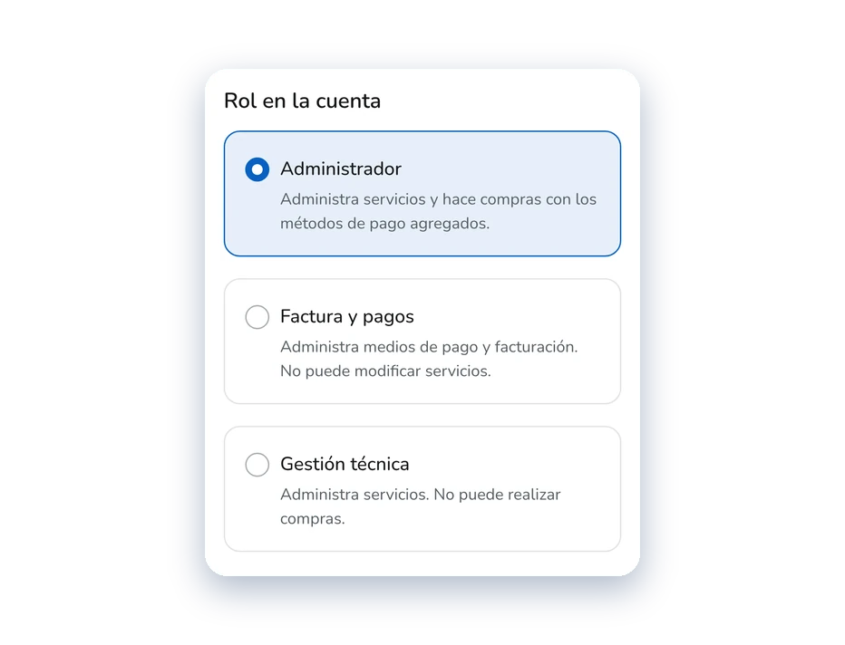

Usuarios y permisos
Gestión de usuarios y cuentas vinculadas
Diseñé cómo varias personas operan una misma cuenta de autogestión, sin pasarse la contraseña: roles con acceso parcial, invitaciones que expiran y un cambio de cuenta que deja claro dónde estás parado.

Por un acuerdo de confidencialidad no menciono el nombre real de la empresa ni del producto. Las capturas son adaptaciones de lo que existe en producción.
En pocas palabras
Buena parte de las cuentas de la plataforma no las maneja una sola persona: hay dueños de agencia que reparten el trabajo entre empleados y freelancers que gestionan servidores de varios clientes. Hasta entonces, compartir el acceso significaba pasar la contraseña maestra, sin acceso parcial y sin saber quién había hecho qué.
El caso lo resuelve en cuatro decisiones: tres roles más un Titular, invitaciones con tres estados que vencen solas, un cambio de cuenta que deja claro dónde estás parado y una pantalla de acceso restringido que nombra el rol necesario. Todo se puede probar en el prototipo en código, en desktop y mobile.
Qué hice yo
Diseñé la sección Usuarios y permisos, el flujo de invitación y el cambio de cuenta, en desktop y mobile, y definí las reglas junto con el Product Owner y el analista de negocio.
Con inteligencia artificial
Usé inteligencia artificial en el relevamiento del código, el armado de componentes, la tokenización, el prototipado en código y los arreglos de usabilidad, entre otras tareas. Todo fue validado por mí.
Con quién trabajé
- 1 diseñador (yo)
- Product Owner
- Líder de desarrollo
- Analista de negocio
- QA
El diseño en cuatro cifras
-
3 + 1
Roles
Administrador, Factura y pagos y Gestión técnica se asignan al invitar. El Titular es quien creó la cuenta.
Roles -
3
Estados de invitación
Pendiente, activo y expirado. Las invitaciones vencen solas para no acumular pendientes que no significan nada.
Invitaciones -
10
Integrantes por cuenta
El tope se ve desde el principio, con un indicador de cupo en la lista.
Invitaciones -
4
Señales de contexto
Menú, inicio, barra y menú de la cuenta cambian juntos al entrar a una cuenta invitada.
Cambio de cuenta
Cifras del diseño final, según el prototipo en código.
Para quién
Dos perfiles, dos necesidades
Matías delega accesos dentro de su propia cuenta. Sofía opera dentro de cuentas ajenas que le asignaron. Cada decisión del caso responde a una de estas dos necesidades.
Matías R.
Dueño de una agencia de diseño web
Rol: Titular
“Necesito que mi equipo trabaje sin que yo esté presente para todo. Pero tampoco quiero que tengan acceso a todo.”
Objetivos
- Delegar acceso técnico sin exponer facturación ni pagos.
- Delegar facturación sin exponer los servidores.
- Revocar accesos sin cambiar la contraseña de toda la cuenta.
Frustraciones
- No hay forma de dar acceso parcial: termina compartiendo la contraseña maestra.
- Cuando alguien se va, hay que cambiar la contraseña de toda la cuenta.
- No tiene visibilidad de qué hizo cada usuario.
Insight clave
Compartir la contraseña maestra le pesa más allá de lo técnico: carga con un riesgo de seguridad que no siempre sabe nombrar. Busca, en el fondo, poder decir con precisión qué puede ver cada uno.
Sofía M.
Desarrolladora backend freelance
Rol: Colaboradora
“Lo peor que me puede pasar es ejecutar algo en la cuenta equivocada, simplemente porque no me di cuenta de en qué cuenta estaba.”
Objetivos
- Saber en qué cuenta está operando sin revisar cada pantalla.
- Aceptar o rechazar un acceso sabiendo qué implica antes de confirmar.
- Salir de una cuenta ajena de forma simple, sin sesiones residuales.
Frustraciones
- Las interfaces se ven idénticas: no siempre sabe en qué cuenta está.
- Tuvo que pedir credenciales de nuevo por accesos vencidos sin aviso.
- No sabe qué puede hacer en cada cuenta hasta intentarlo y fallar.
Insight clave
Para Sofía, el riesgo más alto pasa por operar en el contexto equivocado. Necesita señales claras y persistentes de en qué cuenta está, porque las interfaces idénticas terminan siendo un riesgo operacional real.
En el prototipo uso una sola cuenta de ejemplo, Matías Roldán: es titular de la suya y está invitada a otras tres. En el producto, los dos lados conviven en la misma pantalla.
Decisión 1 de 4
Tres roles y un Titular
Para definir los roles nos sentamos con el Product Owner y el analista de negocio a ordenar todo lo que se podía hacer en la plataforma: había cosas de pago, cosas técnicas y otras de pura gestión de la cuenta. De ahí salieron tres roles que se asignan al invitar y un cuarto, el Titular, que es inherente a quien creó la cuenta.
El acceso a soporte lo tratamos como una capacidad transversal y lo dejamos fuera de la matriz a propósito, para no complicarla sin necesidad.
Los roles, como se eligen al invitar
Es el formulario del prototipo en código: cada rol dice en una línea qué puede y qué no.
Inherente a la cuenta
Titular
Es quien creó la cuenta. No se asigna por invitación.
Se asigna al invitar
Administrador
Administra servicios y hace compras con los métodos de pago agregados.
Se asigna al invitar
Factura y pagos
Administra medios de pago y facturación. No puede modificar servicios.
Se asigna al invitar
Gestión técnica
Administra servicios. No puede realizar compras.
El acceso a soporte es un interruptor aparte. El Titular lo prende o lo apaga para cada integrante, sin importar su rol.
Con el sistema · invitar a un integrante
Con el sistema · invitar a un integrante
La decisión
Tres roles que se asignan al invitar, un Titular que es inherente a la cuenta y el soporte como interruptor aparte. Cada rol se explica en una línea dentro del propio formulario, así quien invita no necesita una matriz para elegir. Y al sacar el soporte de los roles, el Titular lo prende o lo apaga para cada persona sin multiplicar las combinaciones.
Decisión 2 de 4
Invitaciones que se ordenan solas
Quien invita completa un formulario con el email y el rol. Cada invitación pasa por tres estados (pendiente, activo y expirado) y vence sola, para no acumular pendientes que no significan nada. Antes de gestionar usuarios hay un paso de autenticación de dos factores, el mismo que ya pedíamos en otras acciones sensibles.
La cuenta admite hasta diez integrantes. El tope se ve desde el principio, con un indicador de cupo: una primera versión recién lo mostraba al intentar sumar a la persona número once.
El ciclo de una invitación
Cada estado muestra solo las acciones que tienen sentido, tanto para quien invita como para quien recibe.
- El Titular envía la invitación y queda pendiente.
- Pendiente: el Titular puede reenviarla y sigue pendiente. Si la persona acepta, pasa a activo. Si vence el plazo sin respuesta, pasa a expirado. Si la persona rechaza o el Titular la elimina, termina.
- Activo: el Titular puede editar el rol y sigue activo, o revocar el acceso y termina.
- Expirado: el Titular la elimina y termina.
Pendiente
La invitación se envió y todavía no tuvo respuesta.
- Quien invita
- Reenviar · Eliminar
- Quien recibe
- Aceptar · Rechazar
Activo
La persona aceptó y ya opera en la cuenta con el rol asignado.
- Quien invita
- Editar rol · Eliminar
- Quien recibe
- Abandonar la cuenta
Expirado
Venció sin respuesta. No queda como un pendiente eterno.
- Quien invita
- Eliminar
- Quien recibe
- Eliminar
La lista del Titular, con el cupo a la vista
Hasta diez integrantes por cuenta, con su rol, su acceso a soporte y su estado.
Con el sistema · cuenta con 10 de 10 integrantes
Con el sistema · cuenta con 10 de 10 integrantes
Del otro lado: “Asignado a otras cuentas”
La misma pantalla tiene una segunda pestaña para quien recibe invitaciones.
Con el sistema · invitaciones recibidas
Con el sistema · invitaciones recibidas
Cada acción, con los datos a la vista
Reenviar, editar, eliminar, aceptar, rechazar o abandonar una cuenta: todo lo que cambia un acceso pide confirmar y muestra a quién afecta. Son los modales del prototipo en código.
Quien invita
Reenviar invitación
Editar rol
Eliminar integrante
Quien recibe
Aceptar invitación
Rechazar invitación
Abandonar cuenta
El recorrido completo de la sección
Desde que se entra a Usuarios y permisos hasta que cada acción vuelve a la tabla.
- Pantalla
- Decisión
- Paso previo
- Modal o bloqueo
- Antes de entrar se pide tener el 2FA activo; si no, un paso previo lleva a activarlo en Configuración de cuenta.
- Si la cuenta no tiene integrantes, una vista vacía invita a agregar el primero. Si los tiene, se ve la lista con rol, estado, acciones y cupo.
- Para invitar, un formulario con email, rol y acceso a soporte. Al enviarlo, la tabla muestra al nuevo usuario como pendiente.
- Para gestionar a alguien: reenviar (pendiente), editar el rol o revocar el acceso (activo) y eliminar (cualquier estado). Cada acción pasa por un modal y vuelve a la tabla.
La decisión
Tres estados que vencen solos, con acciones distintas según quién los mira: quien invita reenvía, edita o elimina; quien recibe acepta, rechaza o abandona. El 2FA antes de gestionar usuarios reutiliza un paso que ya pedíamos en otras acciones sensibles. El cupo de diez integrantes se ve desde la lista, en vez de aparecer recién al querer sumar al número once. Y cada acción que cambia un acceso pide confirmar, con los datos de la persona a la vista.
Decisión 3 de 4
Cambiar de cuenta sin perder de vista dónde estás
Quien entra a una cuenta ajena opera con un rol que no eligió, y el riesgo real es trabajar sin darse cuenta en la cuenta equivocada. Por eso el cambio de contexto es deliberado y visible en cuatro lugares a la vez: el menú, el inicio, una barra fija y el menú de la cuenta.
Con el producto ya en producción hubo una corrección: la indicación de que estás en una cuenta invitada estaba en el menú lateral y la rediseñé dentro de la sección que se abre desde el avatar del header, para que se vea de forma más evidente.
Elegís dónde querés estar
Antes del inicio hay una pantalla de selección, pensada como los perfiles de Netflix.
Con el sistema · selección de cuentas
Con el sistema · selección de cuentas
Cuatro señales a la vez
Dentro de una cuenta ajena, nada queda librado a la memoria de quien opera.
Con el sistema · dentro de una cuenta invitada
Con el sistema · dentro de una cuenta invitada
El menú sigue al rol
El menú lateral muestra solo lo que ese rol puede usar. Acá, sin Facturas y pagos ni Partners.
El inicio es el de esa cuenta
Solo aparecen los productos y los datos de la cuenta en la que estás.
Una barra lo dice
“Estás en una cuenta invitada” queda fija debajo del header.
El menú de la cuenta cambia
Deja de mostrar tus datos propios e indica en qué cuenta y con qué rol estás operando.
Lo mismo, en mobile
Las dos pantallas en un ancho de 360 px, también como prototipo en código.
Selección de cuentas
Dentro de una cuenta invitada
El recorrido de quien trabaja en cuentas ajenas
Desde el hub hasta volver a él, con los dos desvíos: responder una invitación y chocar con una sección que el rol no permite.
- Pantalla
- Decisión
- Cambio de contexto
- Modal o bloqueo
- El hub muestra tu cuenta y las ajenas. Si hay invitaciones pendientes, un banner lo avisa.
- Responder una invitación: se acepta o se rechaza, las dos con un modal de confirmación y un aviso.
- Fila propia: se opera con el menú completo y se vuelve al hub.
- Fila ajena: el contexto cambia con el rol asignado y se opera con lo que ese rol permite.
- Si se intenta una sección que el rol no permite (por link directo o por un cambio de rol), aparece el acceso restringido con el rol necesario, y se vuelve al inicio de la cuenta.
La decisión
El contexto como información de primer nivel. Elegir la cuenta antes de entrar hace explícito el cambio y, una vez adentro, el menú, el inicio, la barra y el menú de la cuenta cambian juntos: una sola señal se puede pasar por alto, cuatro a la vez no. Ya en producción, la indicación de cuenta invitada pasó del menú lateral al menú del avatar, para que se vea de forma más evidente.
Decisión 4 de 4
El caso borde que ocultar no resolvía
Mi primera versión de “no tenés permiso” era la más simple: ocultar esas secciones del menú. Charlando con el desarrollador apareció un caso borde real, entrar por un link externo o que te cambien el rol con una sección abierta, donde ocultar no alcanzaba. De ahí salió la pantalla de acceso restringido.
De ocultar a explicar
Dos casos que el menú no alcanza a cubrir.
- Entrar por un link externo
- Que te cambien el rol con una sección ya abierta
Primera versión
Ocultar la sección en el menú
Alcanza si la persona llega navegando desde el menú. No cubre los links directos ni los cambios de rol con la sesión abierta.
Versión final
Ocultar y, además, explicar
Si la persona igual llega a una sección que no le corresponde, ve una pantalla que nombra el rol necesario en lugar de un error genérico.
Con el sistema · acceso restringido
Con el sistema · acceso restringido
La decisión
Ocultar y, además, explicar. El menú sigue escondiendo lo que el rol no puede usar, pero si la persona llega igual (por un link directo o porque le cambiaron el rol con la sesión abierta) ve una pantalla que nombra el rol necesario y le ofrece volver al inicio de la cuenta, en lugar de un error genérico.
Cómo trabajé
Alcance
Diseñé la sección Usuarios y permisos, el flujo de invitación y el cambio de cuenta, en desktop y mobile. El acceso a soporte quedó fuera de la matriz de roles a propósito, como un interruptor aparte.
Evidencia
Cuatro años de tickets de la mesa de ayuda me mostraron qué problema traía cada perfil de cliente. De ahí armé dos perfiles: Matías, dueño de una agencia de diseño web, que necesita delegar sin perder el control, y Sofía, desarrolladora freelance que entra y sale de cuentas de clientes y corre el riesgo de operar en la equivocada. Los roles salieron de sesiones con el Product Owner y el analista de negocio, y el caso borde del acceso restringido, de revisar el diseño con el desarrollador.
Cómo avanzó
El pedido vino de arriba y esperó a que se cerraran otros proyectos de seguridad, como el 2FA, antes de tocar algo tan sensible. Trabajé unos tres meses, en tandas, con un equipo de 9 a 12 personas. Lo fuimos armando en etapas, primero Usuarios y permisos y después el cambio de cuenta, porque las secciones están muy relacionadas entre sí.
Estado real
Se armó en etapas y salió todo junto a producción. Más tarde, ya en producción, hubo una corrección: la indicación de que estás en una cuenta invitada vivía en el menú lateral y la rediseñé dentro del menú del avatar, en el header, para que se vea de forma más evidente.
Lo que aprendí
“El contexto es información de primer nivel, no algo que se da por sabido.”
No alcanza con mostrar u ocultar secciones según el permiso: hace falta además una señal clara de dónde está parado quien opera. Esa idea ordenó las cuatro decisiones del caso.
Diseñar para dos perfiles tan distintos dentro del mismo sistema me obligó a revisar cada decisión desde los dos lados. Y la mejor corrección del proyecto salió de mostrarle el diseño a quien lo iba a construir.